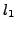

Multiplicative noise and blur removal problems have attracted much attention in recent years. In this paper, we propose an efficient minimization method to recover the blurred and noisy image. We make use of the logarithm to transform multiplicative problems into additive problems and then employ -norm to measure the data-fitting. The total variation is also used as a regularization to the recovered image. We use the alternating direction methods(ADM) to handle the optimization model. As the set of feasible solutions is nonconvex in the formulation, we propose to use approximation to make it to be convex, and therefore make sure the convergence of the proposed algorithm. Experimental results are report to demonstrate that the proposed algorithm performs better than the other existing methods.